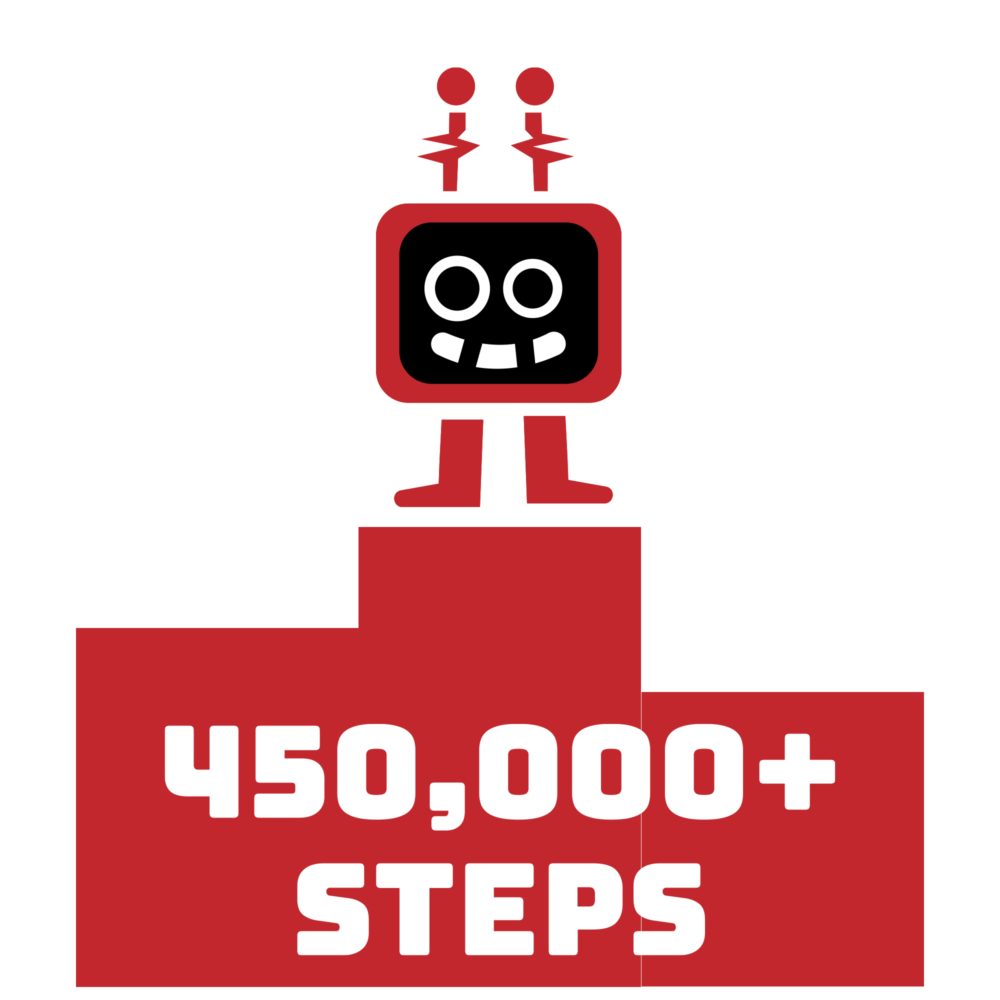
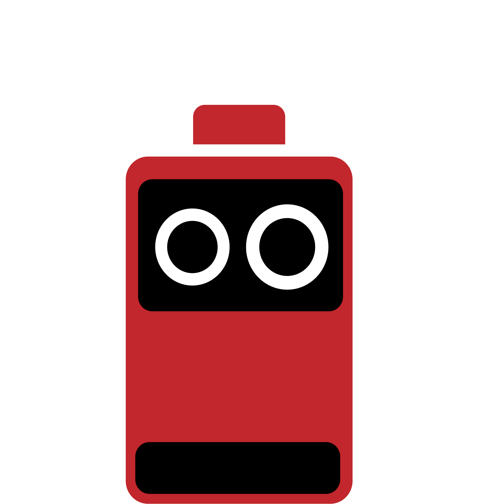

Pikmin Bloom
So I have recently gotten into a funny mobile app called Pikmin Bloom. It's a pedometer game thingiemagige that tracks your steps! So far as of writing this, I have walked well over 450,000 steps in a little under 4 months! Quite surprising considering my relatively sedentary sleepy lifestyle.

Sleepy Times
According to my Health app on my Iphone, my average hours of sleep per night for the last 6 months has been around 6 hours and 41 minutes. Oh boy... school has done a number to me, making me sleep deprived and all that. As I feel as though I need around at least 8 hours to be happy!
Overcharged
Upon deepdiving into my battery settings on my iphone as well, appaerently I use on average over 150% of my phone's battery life on a daily basis. Unfortunately this is only the average over the last 10 days, so I'm not quite sure if my phone just has a real crappy battery life or I'm just a raging phone-o-holic!
